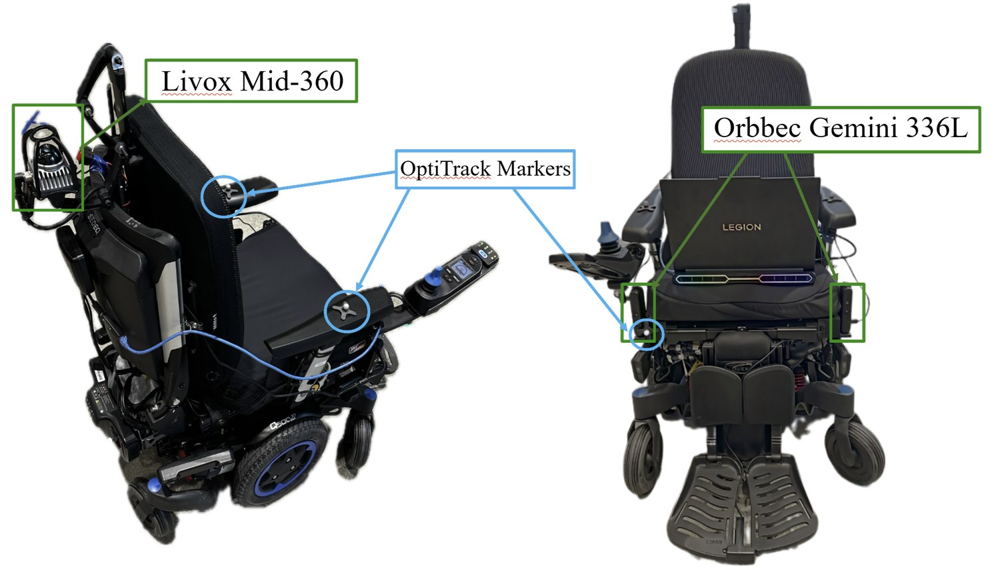
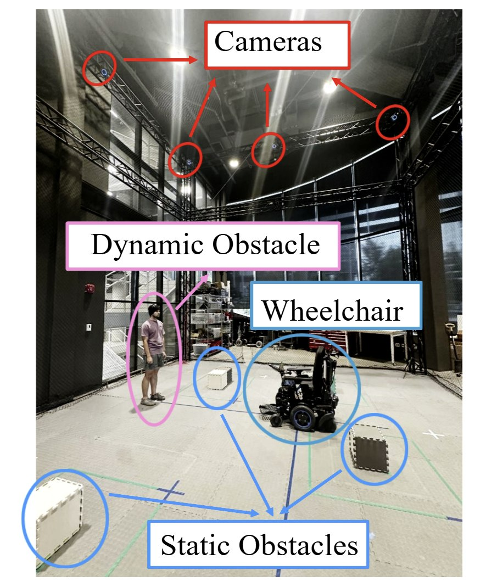
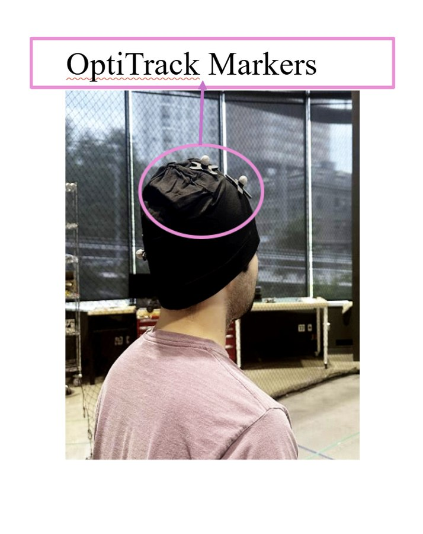

1Electrical and Computer Engineering, Northeastern University
2Institute of Experiential Robotics, Northeastern University
*Corresponding author:
leblebicioglu.d@northeastern.edu
Contributing authors:
ozgul.e@northeastern.edu,
t.padir@northeastern.edu
Autonomous powered wheelchairs (PWs) operating in human-centered environments must combine efficient multi-destination path planning with continuous collision avoidance strategies in the presence of static and dynamic obstacles. This paper presents a hybrid framework integrating Traveling Salesman Problem (TSP)-based global task ordering, Potential-Field (PF) guidance, and local Rapidly-Exploring Random Tree (RRT) and A* planners. PF guidance transfers global path information to the local planning layer and helps the robot remain aligned with the global path during obstacle avoidance. The simulation model uses an elliptical wheelchair representation to account for the platform dimensions during collision avoidance. The local planning layer is enhanced through an extended-neighborhood, direction-aware A* formulation or an RRT planner with weighted environment-aware sampling and a two-step extension strategy. The TSP–PF–RRT and TSP–PF–A* methods are evaluated in normal, crowded, and extra-crowded environments using both point-based and elliptical robot models. The framework is implemented on a physical PW and evaluated using motion-capture (MoCap) for ground-truth measurements and onboard LiDAR and RGB-D sensing without external MoCap support. A representative real-world accessibility scenario is additionally investigated in simulation and hardware. Results show that incorporating the wheelchair geometry changes the observed collision behavior, yielding comparable collision avoidance performance between the two hybrid planners under the elliptical model.



Perpendicular Walk: Two pedestrians pace back and forth, one along the x axis and one along the y axis.
Random Walk: Two pedestrians move randomly while two more actively try to block the wheelchair.
Global Path (PF only): No pedestrians and no local replanning, showing the baseline route.
MoCap Localization: Experiments take place inside an OptiTrack motion-capture cage, where reflective markers give ground-truth pose for both the wheelchair and the pedestrians.
LiDAR Localization: Experiments take place outside the cage. The wheelchair localizes from its onboard LiDAR, with LIO-SAM supplying odometry, and pedestrians are tracked by RGB-D cameras.
The onboard Livox Mid-360 scans of the selected experiment, replayed in the map frame with the wheelchair moving along its LIO-SAM odometry. Runs inside the motion-capture cage have no LiDAR recording.
Points of the accumulated map inside this box are hidden. The played scans are not affected. Coordinates are in meters, in the map frame (x forward, y left, z up from the start pose), and are remembered for each experiment.